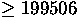
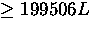

This chapter examines aspects of threads and multiprocessing (and multithreading). We will firts study a little theory of threads and also look at how threading can be effectively used to make programs more efficient. The C thread libraries will then be introduced. The following chapters will look at further thead issues sucj a synchronisation and practical examples.
We can think of a thread as basically a lightweight process. In order to understand this let us consider the two main characteristics of a process:
If we treat these two characteristics as being independent (as does modern OS theory):
If implemented correctly then threads have some advantages of (multi) processes, They take:
Just a we can multiple processes running on some systems we can have multiple threads running:
Figure 28.1 shows a variety of models for threads and processes.
Fig. 28.1 Threads and Processes Some example popular OSs and their thread support is:
Multithreading your code can have many benefits:
Figure 28.2 illustrates different process models and thread control in a single thread and multithreaded application.
Fig. 28.2 Single and Multi- Thread Applicatiions
Example : A file server on a LAN
Example 2: Matrix Multiplication
Matrix Multilication essentially involves taking the rows of one matrix and multiplying and adding corresponding columns in a second matrix i.e:
Fig. 28.3 Matrix Multiplication (3x3 example) Note that each element of the resultant matrix can be computed independently, that is to say by a different thread.
We will develop a C++ example program for matrix multiplication later (see Chapter  ).
).
There are two broad categories of thread implementation:
In this level, the kernel is not aware of the existence of threads -- All thread management is done by the application by using a thread library. Thread switching does not require kernel mode privileges (no mode switch) and scheduling is application specific
Kernel activity for ULTs:
Advantages and inconveniences of ULT
Advantages:
Disadvantages:
Advantages and inconveniences of KLT
Advantages
Disadvantages:
Idea is to combine the best of both approaches
Solaris is an example of an OS that combines both ULT and KLT (Figure 28.4:
Fig. 28.4 Solaris Thread Implementation
The interface to multithreading support is through a subroutine library, libpthread for POSIX threads, and libthread for Solaris threads. They both contain code for:
Use the function pthread_create() to add a new thread of control to the current process. It is prototyped by:
int pthread_create(pthread\_t *tid, const pthread\_attr\_t *tattr, void*(*start_routine)(void *), void *arg);
When an attribute object is not specified, it is NULL, and the default thread is created with the following attributes:
You can also create a default attribute object with pthread_attr_init() function, and then use this attribute object to create a default thread. See the Section 29.2.
An example call of default thread creation is:
#include <pthread.h> pthread_attr_t tattr; pthread_t tid; extern void *start_routine(void *arg); void *arg; int ret; /* default behavior*/ ret = pthread_create(&tid, NULL, start_routine, arg); /* initialized with default attributes */ ret = pthread_attr_init(&tattr); /* default behavior specified*/ ret = pthread_create(&tid, &tattr, start_routine, arg);
The pthread_create() function is called with attr having the necessary state behavior. start_routine is the function with which the new thread begins execution. When start_routine returns, the thread exits with the exit status set to the value returned by start_routine.
When pthread_create is successful, the ID of the thread created is stored in the location referred to as tid.
Creating a thread using a NULL attribute argument has the same effect as using a default attribute; both create a default thread. When tattr is initialized, it acquires the default behavior.
pthread_create() returns a zero and exits when it completes successfully. Any other returned value indicates that an error occurred.
Use the pthread_join function to wait for a thread to terminate. It is prototyped by:
int pthread_join(thread_t tid, void **status);
An example use of this function is:
#include <pthread.h> pthread_t tid; int ret; int status; /* waiting to join thread "tid" with status */ ret = pthread_join(tid, &status); /* waiting to join thread "tid" without status */ ret = pthread_join(tid, NULL);
The pthread_join() function blocks the calling thread until the specified thread terminates. The specified thread must be in the current process and must not be detached. When status is not NULL, it points to a location that is set to the exit status of the terminated thread when pthread_join() returns successfully. Multiple threads cannot wait for the same thread to terminate. If they try to, one thread returns successfully and the others fail with an error of ESRCH. After pthread_join() returns, any stack storage associated with the thread can be reclaimed by the application.
The pthread_join() routine takes two arguments, giving you some flexibility in its use. When you want the caller to wait until a specific thread terminates, supply that thread's ID as the first argument. If you are interested in the exit code of the defunct thread, supply the address of an area to receive it. Remember that pthread_join() works only for target threads that are nondetached. When there is no reason to synchronize with the termination of a particular thread, then that thread should be detached. Think of a detached thread as being the thread you use in most instances and reserve nondetached threads for only those situations that require them.
The main thread wants the results of the lookup but has other work to do in the meantime. So it does those other things and then waits for its helper to complete its job by executing pthread_join(). An argument, pbe, to the new thread is passed as a stack parameter. This can be done here because the main thread waits for the spun-off thread to terminate. In general, though, it is better to malloc() storage from the heap instead of passing an address to thread stack storage, which can disappear or be reassigned if the thread terminated.
The source for thread.c is as follows:
void mainline (...)
{
struct phonebookentry *pbe;
pthread_attr_t tattr;
pthread_t helper;
int status;
pthread_create(&helper, NULL, fetch, &pbe);
/* do something else for a while */
pthread_join(helper, &status);
/* it's now safe to use result */
}
void fetch(struct phonebookentry *arg)
{
struct phonebookentry *npbe;
/* fetch value from a database */
npbe = search (prog_name)
if (npbe != NULL)
*arg = *npbe;
pthread_exit(0);
}
struct phonebookentry {
char name[64];
char phonenumber[32];
char flags[16];
}
The function pthread_detach() is an alternative to pthread_join() to reclaim storage for a thread that is created with a detachstate attribute set to PTHREAD_CREATE_JOINABLE. It is prototyped by:
int pthread\_detach(thread\_t tid);
A simple example of calling this fucntion to detatch a thread is given by:
#include <pthread.h> pthread_t tid; int ret; /* detach thread tid */ ret = pthread_detach(tid);
The pthread_detach() function is used to indicate to the implementation that storage for the thread tid can be reclaimed when the thread terminates. If tid has not terminated, pthread_detach() does not cause it to terminate. The effect of multiple pthread_detach() calls on the same target thread is unspecified.
pthread_detach() returns a zero when it completes successfully. Any other returned value indicates that an error occurred. When any of the following conditions are detected, pthread_detach() fails and returns the an error value.
Single-threaded C programs have two basic classes of data: local data and global data. For multithreaded C programs a third class is added:thread-specific data (TSD). This is very much like global data, except that it is private to a thread.
Thread-specific data is maintained on a per-thread basis. TSD is the only way to define and refer to data that is private to a thread. Each thread-specific data item is associated with a key that is global to all threads in the process. Using the key, a thread can access a pointer (void *) that is maintained per-thread.
The function pthread_keycreate() is used to allocate a key that is used to identify thread-specific data in a process. The key is global to all threads in the process, and all threads initially have the value NULL associated with the key when it is created.
pthread_keycreate() is called once for each key before the key is used. There is no implicit synchronization. Once a key has been created, each thread can bind a value to the key. The values are specific to the thread and are maintained for each thread independently. The per-thread binding is deallocated when a thread terminates if the key was created with a destructor function. pthread_keycreate() is prototyped by:
int pthread_key_create(pthread_key_t *key, void (*destructor) (void *));
A simple example use of this function is:
#include <pthread.h> pthread_key_t key; int ret; /* key create without destructor */ ret = pthread_key_create(&key, NULL); /* key create with destructor */ ret = pthread_key_create(&key, destructor);
When pthread_keycreate() returns successfully, the allocated key is stored in the location pointed to by key. The caller must ensure that the storage and access to this key are properly synchronized. An optional destructor function, destructor, can be used to free stale storage. When a key has a non-NULL destructor function and the thread has a non-NULL value associated with that key, the destructor function is called with the current associated value when the thread exits. The order in which the destructor functions are called is unspecified.
pthread_keycreate() returns zero after completing successfully. Any other returned value indicates that an error occurred. When any of the following conditions occur, pthread_keycreate() fails and returns an error value.
The function pthread_keydelete() is used to destroy an existing thread-specific data key. Any memory associated with the key can be freed because the key has been invalidated and will return an error if ever referenced. (There is no comparable function in Solaris threads.)
pthread_keydelete() is prototyped by:
int pthread_key_delete(pthread_key_t key);
A simple example use of this function is:
#include <pthread.h> pthread_key_t key; int ret; /* key previously created */ ret = pthread_key_delete(key);
Once a key has been deleted, any reference to it with the pthread_setspecific() or pthread_getspecific() call results in the EINVAL error.
It is the responsibility of the programmer to free any thread-specific resources before calling the delete function. This function does not invoke any of the destructors.
pthread_keydelete() returns zero after completing successfully. Any other returned value indicates that an error occurred. When the following condition occurs, pthread_keycreate() fails and returns the corresponding value.
The function pthread_setspecific() is used to set the thread-specific binding to the specified thread-specific data key. It is prototyped by :
int pthread_setspecific(pthread_key_t key, const void *value);
A simple example use of this function is:
#include <pthread.h> pthread_key_t key; void *value; int ret; /* key previously created */ ret = pthread_setspecific(key, value);
pthread_setspecific() returns zero after completing successfully. Any other returned value indicates that an error occurred. When any of the following conditions occur, pthread_setspecific() fails and returns an error value.
Note: pthread_setspecific() does not free its storage. If a new binding is set, the existing binding must be freed; otherwise, a memory leak can occur.
Use pthread_getspecific() to get the calling thread's binding for key, and store it in the location pointed to by value. This function is prototyped by:
int pthread_getspecific(pthread_key_t key);
A simple example use of this function is:
#include <pthread.h> pthread_key_t key; void *value; /* key previously created */ value = pthread_getspecific(key);
Thread-Specific Data Global but Private
Consider the following code:
body() {
...
while (write(fd, buffer, size) == -1) {
if (errno != EINTR) {
fprintf(mywindow, "%s\n", strerror(errno));
exit(1);
}
}
...
}
This code may be executed by any number of threads, but it has references to two global variables, errno and mywindow, that really should be references to items private to each thread.
References to errno should get the system error code from the routine called by this thread, not by some other thread. So, references to errno by one thread refer to a different storage location than references to errno by other threads. The mywindow variable is intended to refer to a stdio stream connected to a window that is private to the referring thread. So, as with errno, references to mywindow by one thread should refer to a different storage location (and, ultimately, a different window) than references to mywindow by other threads. The only difference here is that the threads library takes care of errno, but the programmer must somehow make this work for mywindow. The next example shows how the references to mywindow work. The preprocessor converts references to mywindow into invocations of the mywindow procedure. This routine in turn invokes pthread_getspecific(), passing it the mywindow_key global variable (it really is a global variable) and an output parameter, win, that receives the identity of this thread's window.
Turning Global References Into Private References Now consider this code fragment:
thread_key_t mywin_key;
FILE *_mywindow(void) {
FILE *win;
pthread_getspecific(mywin_key, &win);
return(win);
}
#define mywindow _mywindow()
void routine_uses_win( FILE *win) {
...
}
void thread_start(...) {
...
make_mywin();
...
routine_uses_win( mywindow )
...
}
The mywin_key variable identifies a class of variables for which each thread has its own private copy; that is, these variables are thread-specific data. Each thread calls make_mywin to initialize its window and to arrange for its instance of mywindow to refer to it. Once this routine is called, the thread can safely refer to mywindow and, after mywindow, the thread gets the reference to its private window. So, references to mywindow behave as if they were direct references to data private to the thread.
We can now set up our initial Thread-Specific Data:
void make_mywindow(void) {
FILE **win;
static pthread_once_t mykeycreated = PTHREAD_ONCE_INIT;
pthread_once(&mykeycreated, mykeycreate);
win = malloc(sizeof(*win));
create_window(win, ...);
pthread_setspecific(mywindow_key, win);
}
void mykeycreate(void) {
pthread_keycreate(&mywindow_key, free_key);
}
void free_key(void *win) {
free(win);
}
First, get a unique value for the key, mywin_key. This key is used to identify the thread-specific class of data. So, the first thread to call make_mywin eventually calls pthread_keycreate(), which assigns to its first argument a unique key. The second argument is a destructor function that is used to deallocate a thread's instance of this thread-specific data item once the thread terminates.
The next step is to allocate the storage for the caller's instance of this thread-specific data item. Having allocated the storage, a call is made to the create_window routine, which sets up a window for the thread and sets the storage pointed to by win to refer to it. Finally, a call is made to pthread_setspecific(), which associates the value contained in win (that is, the location of the storage containing the reference to the window) with the key. After this, whenever this thread calls pthread_getspecific(), passing the global key, it gets the value that was associated with this key by this thread when it called pthread_setspecific(). When a thread terminates, calls are made to the destructor functions that were set up in pthread_key_create(). Each destructor function is called only if the terminating thread established a value for the key by calling pthread_setspecific().
The function pthread_self() can be called to return the ID of the calling thread. It is prototyped by:
pthread_t pthread_self(void);
It is use is very straightforward:
#include <pthread.h> pthread_t tid; tid = pthread_self();
The function pthread_equal() can be called to compare the thread identification numbers of two threads. It is prototyped by:
int pthread_equal(pthread_t tid1, pthread_t tid2);
It is use is straightforward to use, also:
#include <pthread.h> pthread_t tid1, tid2; int ret; ret = pthread_equal(tid1, tid2);
As with other comparison functions, pthread_equal() returns a non-zero value when tid1 and tid2 are equal; otherwise, zero is returned. When either tid1 or tid2 is an invalid thread identification number, the result is unpredictable.
Use pthread_once() to call an initialization routine the first time pthread_once() is called -- Subsequent calls to have no effect. The prototype of this function is:
int pthread_once(pthread_once_t *once_control, void (*init_routine)(void));
The function sched_yield() to cause the current thread to yield its execution in favor of another thread with the same or greater priority. It is prototyped by:
int sched_yield(void);
It is clearly a simple function to call:
#include <sched.h> int ret; ret = sched_yield();
sched_yield() returns zero after completing successfully. Otherwise -1 is returned and errno is set to indicate the error condition.
Use pthread_setschedparam() to modify the priority of an existing thread. This function has no effect on scheduling policy. It is prototyped as follows:
int pthread_setschedparam(pthread_t tid, int policy, const struct sched_param *param);
and used as follows:
#include <pthread.h> pthread_t tid; int ret; struct sched_param param; int priority; /* sched_priority will be the priority of the thread */ sched_param.sched_priority = priority; /* only supported policy, others will result in ENOTSUP */ policy = SCHED_OTHER; /* scheduling parameters of target thread */ ret = pthread_setschedparam(tid, policy, ¶m);
pthread_setschedparam() returns zero after completing successfully. Any other returned value indicates that an error occurred. When either of the following conditions occurs, the pthread_setschedparam() function fails and returns an error value.
int pthread_getschedparam(pthread_t tid, int policy, struct schedparam *param) gets the priority of the existing thread.
An example call of this function is:
#include <pthread.h> pthread_t tid; sched_param param; int priority; int policy; int ret; /* scheduling parameters of target thread */ ret = pthread_getschedparam (tid, &policy, ¶m); /* sched_priority contains the priority of the thread */ priority = param.sched_priority;
pthread_getschedparam() returns zero after completing successfully. Any other returned value indicates that an error occurred. When the following condition occurs, the function fails and returns the error value set.
Signal may be sent to threads is a similar fashion to those for process as follows:
#include <pthread.h> #include <signal.h> int sig; pthread_t tid; int ret; ret = pthread_kill(tid, sig);
pthread_kill() sends the signal sig to the thread specified by tid. tid must be a thread within the same process as the calling thread. The sig argument must be a valid signal of the same type defined for signal() in < signal.h> (See Chapter 23)
When sig is zero, error checking is performed but no signal is actually sent. This can be used to check the validity of tid.
This function returns zero after completing successfully. Any other returned value indicates that an error occurred. When either of the following conditions occurs, pthread_kill() fails and returns an error value.
The function pthread_sigmask() may be used to change or examine the signal mask of the calling thread. It is prototyped as follows:
int pthread_sigmask(int how, const sigset_t *new, sigset_t *old);
Example uses of this function include:
#include <pthread.h> #include <signal.h> int ret; sigset_t old, new; ret = pthread_sigmask(SIG_SETMASK, &new, &old); /* set new mask */ ret = pthread_sigmask(SIG_BLOCK, &new, &old); /* blocking mask */ ret = pthread_sigmask(SIG_UNBLOCK, &new, &old); /* unblocking */
how determines how the signal set is changed. It can have one of the following values:
When the value of new is NULL, the value of how is not significant and the signal mask of the thread is unchanged. So, to inquire about currently blocked signals, assign a NULL value to the new argument. The old variable points to the space where the previous signal mask is stored, unless it is NULL.
pthread_sigmask() returns a zero when it completes successfully. Any other returned value indicates that an error occurred. When the following condition occurs, pthread_sigmask() fails and returns an errro value.
A thread can terminate its execution in the following ways:
The void pthread_exit(void *status) is used terminate a thread in a similar fashion the exit() for a process:
#include <pthread.h> int status; pthread_exit(&status); /* exit with status */
The pthread_exit() function terminates the calling thread. All thread-specific data bindings are released. If the calling thread is not detached, then the thread's ID and the exit status specified by status are retained until the thread is waited for (blocked). Otherwise, status is ignored and the thread's ID can be reclaimed immediately.
The pthread_cancel() function to cancel a thread is prototyped:
int pthread_cancel(pthread_t thread);
and called:
#include <pthread.h> pthread_t thread; int ret; ret = pthread_cancel(thread);
How the cancellation request is treated depends on the state of the target thread. Two functions,
pthread_setcancelstate() and pthread_setcanceltype() (see man pages for further information on these functions), determine that state.
pthread_cancel() returns zero after completing successfully. Any other returned value indicates that an error occurred. When the following condition occurs, the function fails and returns an error value.
Solaris have many similarities to POSIX threads,In this sectionfocus on the Solaris features that are not found in POSIX threads. Where functionality is virtually the same for both Solaris threads and for pthreads, (even though the function names or arguments might differ), only a brief example consisting of the correct include file and the function prototype is presented. Where return values are not given for the Solaris threads functions, see the appropriate man pages.
The Solaris threads API and the pthreads API are two solutions to the same problem: building parallelism into application software. Although each API is complete in itself, you can safely mix Solaris threads functions and pthread functions in the same program.
The two APIs do not match exactly, however. Solaris threads supports functions that are not found in pthreads, and pthreads includes functions that are not supported in the Solaris interface. For those functions that do match, the associated arguments might not, although the information content is effectively the same.
By combining the two APIs, you can use features not found in one to enhance the other. Similarly, you can run applications using Solaris threads, exclusively, with applications using pthreads, exclusively, on the same system.
To use the Solaris threads functions described in this chapter, you must link with the Solaris threads library -lthread and include the <thread.h> in all programs.
Let us begin by looking at some functions that are unique to Solaris threads:
The function thr_suspend() immediately suspends the execution of the thread specified by a target thread, (tid below). It is prototyped by:
int thr_suspend(thread_t tid);
On successful return from thr_suspend(), the suspended thread is no longer executing. Once a thread is suspended, subsequent calls to thr_suspend() have no effect. Signals cannot awaken the suspended thread; they remain pending until the thread resumes execution.
A simple example call is as follows:
#include <thread.h> thread_t tid; /* tid from thr_create() */ /* pthreads equivalent of Solaris tid from thread created */ /* with pthread_create() */ pthread_t ptid; int ret; ret = thr_suspend(tid); /* using pthreads ID variable with a cast */ ret = thr_suspend((thread_t) ptid);
Note: pthread_t tid as defined in pthreads is the same as thread_t tid in Solaris threads. tid values can be used interchangeably either by assignment or through the use of casts.
The function thr_continue() resumes the execution of a suspended thread. It is prototypes as follows:
int thr_continue(thread_t tid);
Once a suspended thread is continued, subsequent calls to thr_continue() have no effect.
A suspended thread will not be awakened by a signal. The signal stays pending until the execution of the thread is resumed by thr_continue().
thr_continue() returns zero after completing successfully. Any other returned value indicates that an error occurred. When the following condition occurs, thr_continue() The following code fragment illustrates the use of the function:
thread_t tid; /* tid from thr_create()*/ /* pthreads equivalent of Solaris tid from thread created */ /* with pthread_create()*/ pthread_t ptid; int ret; ret = thr_continue(tid); /* using pthreads ID variable with a cast */ ret = thr_continue((thread_t) ptid)
By default, Solaris threads attempt to adjust the system execution resources (LWPs) used to run unbound threads to match the real number of active threads. While the Solaris threads package cannot make perfect decisions, it at least ensures that the process continues to make progress. When you have some idea of the number of unbound threads that should be simultaneously active (executing code or system calls), tell the library through thr_setconcurrency(int new_level). To get the number of threads being used, use the function thr_getconcurrencyint(void):
thr_setconcurrency() provides a hint to the system about the required level of concurrency in the application. The system ensures that a sufficient number of threads are active so that the process continues to make progress, for example:
#include <thread.h> int new_level; int ret; ret = thr_setconcurrency(new_level);
Unbound threads in a process might or might not be required to be simultaneously active. To conserve system resources, the threads system ensures by default that enough threads are active for the process to make progress, and that the process will not deadlock through a lack of concurrency. Because this might not produce the most effective level of concurrency, thr_setconcurrency() permits the application to give the threads system a hint, specified by new_level, for the desired level of concurrency. The actual number of simultaneously active threads can be larger or smaller than new_level. Note that an application with multiple compute-bound threads can fail to schedule all the runnable threads if thr_setconcurrency() has not been called to adjust the level of execution resources. You can also affect the value for the desired concurrency level by setting the THR_NEW_LW flag in thr_create(). This effectively increments the current level by one.
thr_setconcurrency() a zero when it completes successfully. Any other returned value indicates that an error occurred. When any of the following conditions are detected, thr_setconcurrency() fails and returns the corresponding value to errno.
Readers/Writer locks are another unique feature of Solaris threads. They allow simultaneous read access by many threads while restricting write access to only one thread at a time.
When any thread holds the lock for reading, other threads can also acquire the lock for reading but must wait to acquire the lock for writing. If one thread holds the lock for writing, or is waiting to acquire the lock for writing, other threads must wait to acquire the lock for either reading or writing. Readers/writer locks are slower than mutexes, but can improve performance when they protect data that are not frequently written but that are read by many concurrent threads. Use readers/writer locks to synchronize threads in this process and other processes by allocating them in memory that is writable and shared among the cooperating processes (see mmap(2)) and by initializing them for this behavior. By default, the acquisition order is not defined when multiple threads are waiting for a readers/writer lock. However, to avoid writer starvation, the Solaris threads package tends to favor writers over readers. Readers/writer locks must be initialized before use.
Initialize a Readers/Writer Lock
The function rwlock_init() initialises the readers/writer lock. it is prototypes in <synch.h> or <thread.h> as follows:
int rwlock_init(rwlock_t *rwlp, int type, void * arg);
The readers/writer lock pointed to by rwlp and to set the lock state to unlocked. type can be one of the following
Note: that arg is currently ignored.
rwlock_init() returns zero after completing successfully. Any other returned value indicates that an error occurred. When any of the following conditions occur, the function fails and returns the corresponding value to errno.
Multiple threads must not initialize the same readers/writer lock simultaneously. Readers/writer locks can also be initialized by allocation in zeroed memory, in which case a type of USYNC_THREAD is assumed. A readers/writer lock must not be reinitialized while other threads might be using it.
An example code fragment that initialises Readers/Writer Locks with Intraprocess Scope is as follows:
#include <thread.h> rwlock_t rwlp; int ret; /* to be used within this process only */ ret = rwlock_init(&rwlp, USYNC_THREAD, 0); Initializing Readers/Writer Locks with Interprocess Scope #include <thread.h> rwlock_t rwlp; int ret; /* to be used among all processes */ ret = rwlock_init(&rwlp, USYNC_PROCESS, 0);
Acquire a Read Lock
To acquire a read lock on the readers/writer lock use the rw_rdlock() function:
int rw_rdlock(rwlock_t *rwlp);
The readers/writer lock pointed to by rwlp. When the readers/writer lock is already locked for writing, the calling thread blocks until the write lock is released. Otherwise, the read lock is acquired.
rw_rdlock() returns zero after completing successfully. Any other returned value indicates that an error occurred. When any of the following conditions occur, the function fails and returns the corresponding value to errno.
A function rw_tryrdlock(rwlock_t *rwlp) may also be used to attempt to acquire a read lock on the readers/writer lock pointed to by rwlp. When the readers/writer lock is already locked for writing, it returns an error. Otherwise, the read lock is acquired. This function returns zero after completing successfully. Any other returned value indicates that an error occurred.
Acquire a Write Lock
The function rw_wrlock(rwlock_t *rwlp) acquires a write lock on the readers/writer lock pointed to by rwlp. When the readers/writer lock is already locked for reading or writing, the calling thread blocks until all the read locks and write locks are released. Only one thread at a time can hold a write lock on a readers/writer lock.
rw_wrlock() returns zero after completing successfully. Any other returned value indicates that an error occurred.
Use rw_trywrlockrwlock_t *rwlp) to attempt to acquire a write lock on the readers/writer lock pointed to by rwlp. When the readers/writer lock is already locked for reading or writing, it returns an error.
rw_trywrlock() returns zero after completing successfully. Any other returned value indicates that an error occurred.
Unlock a Readers/Writer Lock
The function rw_unlock(rwlock_t *rwlp) unlocks a readers/writer lock pointed to by rwlp. The readers/writer lock must be locked and the calling thread must hold the lock either for reading or writing. When any other threads are waiting for the readers/writer lock to become available, one of them is unblocked.
rw_unlock() returns zero after completing successfully. Any other returned value indicates that an error occurred.
Destroy Readers/Writer Lock State
The function rwlock_destroy(rwlock_t *rwlp) destroys any state associated with the readers/writer lock pointed to by rlwp. The space for storing the readers/writer lock is not freed.
rwlock_destroy() returns zero after completing successfully. Any other returned value indicates that an error occurred.
The following example uses a bank account analogy to demonstrate readers/writer locks. While the program could allow multiple threads to have concurrent read-only access to the account balance, only a single writer is allowed. Note that the get_balance() function needs the lock to ensure that the addition of the checking and saving balances occurs atomically.
rwlock_t account_lock;
float checking_balance = 100.0;
float saving_balance = 100.0;
...
rwlock_init(&account_lock, 0, NULL);
...
float
get_balance() {
float bal;
rw_rdlock(&account_lock);
bal = checking_balance + saving_balance;
rw_unlock(&account_lock);
return(bal);
}
void
transfer_checking_to_savings(float amount) {
rw_wrlock(&account_lock);
checking_balance = checking_balance - amount;
saving_balance = saving_balance + amount;
rw_unlock(&account_lock);
}
Here we simply list the similar thread functions and their prototype definitions, except where the complexity of the function merits further exposition. .
The thr_create() routine is one of the most elaborate of all the Solaris threads library routines.
It is prototyped as follows:
int thr_create(void *stack_base, size_t stack_size, void *(*start_routine) (void *), void *arg, long flags, thread_t *new_thread);
Thjis function adds a new thread of control to the current process. Note that the new thread does not inherit pending signals, but it does inherit priority and signal masks.
stack_base contains the address for the stack that the new thread uses. If stack_base is NULL then thr_create() allocates a stack for the new thread with at least stac_size bytes. stack_size Contains the size, in number of bytes, for the stack that the new thread uses. If stack_size is zero, a default size is used. In most cases, a zero value works best. If stack_size is not zero, it must be greater than the value returned by thr_min_stack(void) inquiry function.
There is no general need to allocate stack space for threads. The threads library allocates one megabyte of virtual memory for each thread's stack with no swap space reserved.
start_routine contains the function with which the new thread begins execution. When start_routine returns, the thread exits with the exit status set to the value returned by start_routine
arg can be anything that is described by void, which is typically any 4-byte value. Anything larger must be passed indirectly by having the argument point to it.
Note that you can supply only one argument. To get your procedure to take multiple arguments, encode them as one (such as by putting them in a structure).
flags specifies attributes for the created thread. In most cases a zero value works best. The value in flags is constructed from the bitwise inclusive OR of the following:
When you specify both THR_BOUND and THR_NEW_LWP, two LWPs are typically created -- one for the bound thread and another for the pool of LWPs running unbound threads.
A process can exit either by calling exit() or by having every thread in the process that was not created with the THR_DAEMON flag call thr_exit(). An application, or a library it calls, can create one or more threads that should be ignored (not counted) in the decision of whether to exit. The THR_DAEMONl flag identifies threads that are not counted in the process exit criterion.
new_thread points to a location (when new_thread is not NULL) where the ID of the new thread is stored when thr_create() is successful. The caller is responsible for supplying the storage this argument points to. The ID is valid only within the calling process. If you are not interested in this identifier, supply a zero value to new_thread.
thr_create() returns a zero and exits when it completes successfully. Any other returned value indicates that an error occurred. When any of the following conditions are detected, thr_create() fails and returns the corresponding value to errno.
The int thr_self(void) to get the ID of the calling thread.
void thr_yield(void) causes the current thread to yield its execution in favor of another thread with the same or greater priority; otherwise it has no effect. There is no guarantee that a thread calling thr_yield() will do so.
The following functions exist and operate as do pthreads.
int thr_kill(thread_t target_thread, int sig) sends a signal to a thread.
int thr_sigsetmask(int how, const sigset_t *set, sigset_t *oset) to change or examine the signal mask of the calling thread.
The void th_exit(void *status) to terminates a thread.
The int thr_join(thread_t tid, thread_t *departedid, void **status) function to wait for a thread to terminate.
Therefore to join specific threads one would do:
#include <thread.h> thread_t tid; thread_t departedid; int ret; int status; /* waiting to join thread "tid" with status */ ret = thr_join(tid, &departedid, (void**)&status); /* waiting to join thread "tid" without status */ ret = thr_join(tid, &departedid, NULL); /* waiting to join thread "tid" without return id and status */ ret = thr_join(tid, NULL, NULL);
When the tid is (thread_t) 0, then thread_join() waits for any undetached thread in the process to terminate. In other words, when no thread identifier is specified, any undetached thread that exits causes thread_join() to return.
To join any threads:
#include <thread.h> thread_t tid; thread_t departedid; int ret; int status; /* waiting to join thread "tid" with status */ ret = thr_join(NULL, &departedid, (void **)&status);
By indicating NULL as thread id in the thr_join(), a join will take place when any non detached thread in the process exits. The departedid will indicate the thread ID of exiting thread.
Except for the function names and arguments, thread specific data is the same for Solaris as it is for POSIX.
int thr_keycreate(thread_key_t *keyp, void (*destructor) (void *value)) allocates a key that is used to identify thread-specific data in a process.
int thr_setspecific(thread_key_t key, void *value) binds value to the thread-specific data key, key, for the calling thread.
int thr_getspecific(thread_key_t key, void **valuep) stores the current value bound to key for the calling thread into the location pointed to by valuep.
In Solaris threads, if a thread is to be created with a priority other than that of its parent's, it is created in SUSPEND mode. While suspended, the threads priority is modified using the int thr_setprio(thread_t tid, int newprio) function call; then it is continued.
An unbound thread is usually scheduled only with respect to other threads in the process using simple priority levels with no adjustments and no kernel involvement. Its system priority is usually uniform and is inherited from the creating process.
The function thr_setprio() changes the priority of the thread, specified by tid, within the current process to the priority specified by newprio.
By default, threads are scheduled based on fixed priorities that range from zero, the least significant, to the largest integer. The tid will preempt lower priority threads, and will yield to higher priority threads. For example:
#include <thread.h> thread_t tid; int ret; int newprio = 20; /* suspended thread creation */ ret = thr_create(NULL, NULL, func, arg, THR_SUSPEND, &tid); /* set the new priority of suspended child thread */ ret = thr_setprio(tid, newprio); /* suspended child thread starts executing with new priority */ ret = thr_continue(tid);
Use int thr_getprio(thread_t tid, int *newprio) to get the current priority for the thread. Each thread inherits a priority from its creator. thr_getprio() stores the current priority, tid, in the location pointed to by newprio.
Historically, most code has been designed for single-threaded programs. This is especially true for most of the library routines called from C programs. The following implicit assumptions were made for single-threaded code:
The next few examples discuss some of the problems that arise in multithreaded programs because of these assumptions, and how you can deal with them.
Traditional, single-threaded C and UNIX have a convention for handling errors detected in system calls. System calls can return anything as a functional value (for example, write returns the number of bytes that were transferred). However, the value -1 is reserved to indicate that something went wrong. So, when a system call returns -1, you know that it failed.
Consider the following piece of code:
extern int errno;
...
if (write(file_desc, buffer, size) == -1)
{ /* the system call failed */
fprintf(stderr, "something went wrong, error code = %d\n", errno);
exit(1);
}
Rather than return the actual error code (which could be confused with normal return values), the error code is placed into the global variable errno. When the system call fails, you can look in errno to find out what went wrong.
Now consider what happens in a multithreaded environment when two threads fail at about the same time, but with different errors.
This global variable approach simply does not work for multithreaded programs. Threads solves this problem through a conceptually new storage class: thread-specific data.
This storage is similar to global storage in that it can be accessed from any procedure in which a thread might be running. However, it is private to the thread: when two threads refer to the thread-specific data location of the same name, they are referring to two different areas of storage.
So, when using threads, each reference to errno is thread-specific because each thread has a private copy of errno. This is achieved in this implementation by making errno a macro that expands to a function call.
There are many options to consider for header files, define flags, and linking.
The following items are required to compile and link a multithreaded program.
The include file <thread.h>, used with the -lthread library, compiles code that is upward compatible with earlier releases of the Solaris system. This library contains both interfaces: those with Solaris semantics and those with POSIX semantics. To call thr_setconcurrency() with POSIX threads, your program needs to include <thread.h>.
The include file <pthread.h>, used with the -lpthread library, compiles code that is conformant with the
multithreading interfaces defined by the POSIX 1003.1c standard. For complete POSIX compliance, the
define flag _POSIX_C_SOURCE
should be set to a (long) value , as follows:
cc [flags] file... -D_POSIX_C_SOURCE=N (where N 199506L)
You can mix Solaris threads and POSIX threads in the same application, by including both <thread.h> and
<pthread.h>, and linking with either the -lthread or -lpthread library.
In mixed use, Solaris semantics prevail when compiling with -D_REENTRANT flag set  and linking with
-lthread, whereas POSIX semantics prevail when compiling with D_POSIX_C_SOURCE flag set and linking
with -lpthread.
Defining _REENTRANT or _POSIX_C_SOURCE
Linking With libthread or libpthread
For POSIX threads behavior, load the libpthread library. For Solaris threads behavior, load the libthread library. Some POSIX programmers might want to link with -lthreadto preserve the Solaris distinction between fork() and fork1(). All that -lpthread really does is to make fork() behave the same way as the Solaris fork1() call, and change the behavior of alarm().
To use libthread, specify -lthread last on the cc command line.
To use libpthread, specify -lpthread last on the cc command line.
Do not link a nonthreaded program with -lthread or -lpthread. Doing so establishes multithreading mechanisms at link time that are initiated at run time. These slow down a single-threaded application, waste system resources, and produce misleading results when you debug your code.
Note: For C++ programs that use threads, use the -mt option, rather than -lthread, to compile and link your application. The -mt option links with libthread and ensures proper library linking order. ( Using -lthread might cause your program to crash (core dump).
Linking with -lposix4 for POSIX Semaphores
The Solaris semaphore routines (see Chapter 30.3) are contained in the libthread library. By contrast, you link with the -lposix4 library to get the standard POSIX semaphore routines (See Chapter 25)
The following list points out some of the more frequent oversights and errors that can cause bugs in multithreaded programs.
In general, multithreading bugs are statistical instead of deterministic. Tracing is usually a more effective method of finding order of execution problems than is breakpoint-based debugging.